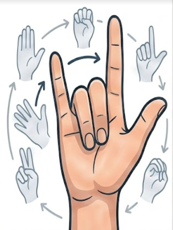

Cara Kerja BE COOL
Tiga langkah mudah untuk menguasai komunikasi bahasa isyarat menggunakan platform cerdas kami.
1
Bentuk Gerakan Isyarat
AI akan mendeteksi setiap bentuk gerakan bahasa isyarat yang Anda lakukan.

2
Gunakan Kamera
Aktifkan webcam untuk memindai gerakan tangan secara langsung.

3
Tingkatkan Skill
Dapatkan penilaian instan dari AI, tingkatkan akurasi, dan kuasai materi.